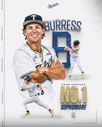

Drew Burress is an elite college baseball outfielder for the Georgia Tech Yellow Jackets. Listed at 5-foot-9, 180 pounds, he is widely regarded as one of the most productive and dynamic power hitters in Division I baseball.
